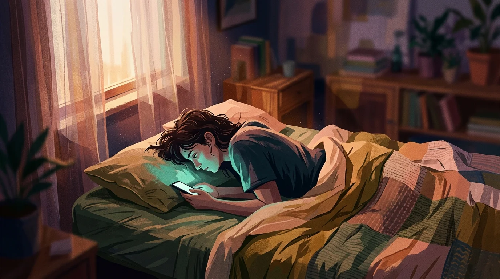
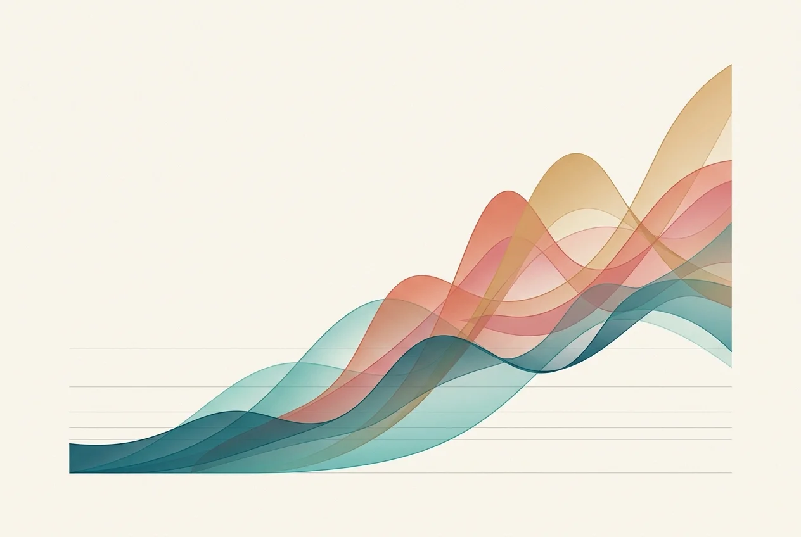
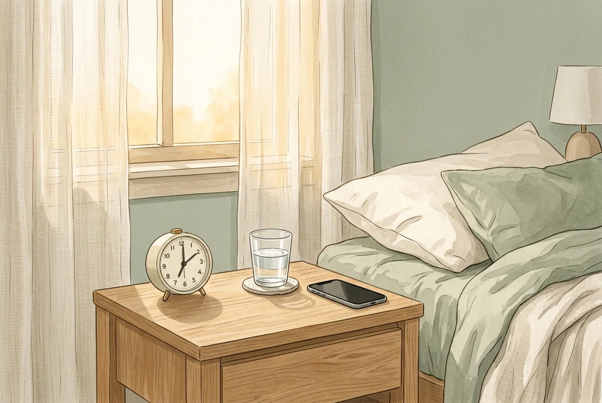

The Link Between High Screen Time and Morning Anxiety
Before your first coffee, your phone has already hijacked your stress hormones. Here's what the science actually says — and what to do about it.

You're lying in bed. Half-awake. Your phone is already in your hand — you don't remember picking it up. Before your first intentional thought, your thumb is moving. Three minutes pass. Then fifteen. By the time your feet hit the floor, your chest is already tight, your mind is racing through things you can't control, and you haven't had a single sip of water yet.
That's not a coincidence. And it's not a character flaw.
High screen time — especially in the first hour of the day — is directly linked to elevated anxiety throughout that day. The mechanism is biological: your body runs a critical hormonal calibration sequence each morning, and phone use systematically disrupts it. Once you understand what's actually happening inside your nervous system when you scroll before breakfast, the solution becomes obvious.
What the Research Actually Shows

The data is no longer ambiguous. A 2024 study tracking 982 adolescents found that those spending more than six hours daily on screens showed a 50% higher prevalence of anxiety symptoms compared to those under two hours. Those in the four-to-six-hour range still showed 23% higher prevalence. These are not marginal statistical blips.
A UK birth cohort study of 14,665 participants — tracking screen habits at age 16 and mental health outcomes at age 18 — found that three or more hours of daily screen use was associated with a 30% higher risk of anxiety (OR 1.30, 95% CI: 1.10–1.55). Two years later. The anxiety from screen time at 16 showed up in clinical assessments at 18.
These aren't correlation blips. They're a signal consistent enough across populations and continents to establish a clear pattern: more screen time, more anxiety. Not only because anxious people watch more screens (though that feedback loop is real) but because passive scrolling actively raises your physiological threat-detection state.
This is part of what researchers document under doomscrolling — the mechanism isn't just habitual, it's neurochemical.
Why the Morning Is the Most Vulnerable Window

Not all screen time is created equal. Two hours of evening reading and two hours of morning social media feed scrolling will not produce the same anxiety outcome. The timing matters enormously — because of something called the cortisol awakening response (CAR).
In the 20-45 minutes after you wake up, your body releases a natural surge of cortisol. This isn't your stress response in the bad sense — it's your nervous system running its daily briefing. The CAR helps you consolidate memory, prepare for cognitive demands, and calibrate your threat-detection threshold. Scientists call it the "steroid alarm clock." It's biological preparation, and it's supposed to complete its arc without interference.
A 2018 study published in Computers in Human Behavior — dubbed the WIRED study — found that adolescents with greater phone use had a significantly elevated cortisol awakening response and higher levels of the inflammatory marker IL-6. Translation: phone use doesn't just track your stress — it amplifies the biological process your body uses to set your stress baseline for the day.
When you check your phone during the CAR window, you're flooding your nervous system's calibration period with an unpredictable stream of stimuli — notifications, breaking news, comparison triggers, social feedback (or the absence of it). Every input arrives as a low-level threat signal. Your cortisol spike goes higher than it would have naturally. It stays elevated longer. By 9 AM, you're already running on a stress response you didn't need to generate.
Anxious Biology Meets Anxious Content
Social media feeds are not neutral. They're algorithmically optimized for engagement — and the content that drives the most engagement is, reliably, negative. Outrage. Fear. Comparison. Conflict. In 2026, your feed is a curated stream of the most emotionally activating content available, surfaced by models with billions of data points on what makes your thumb stop moving.
Your brain processes negative stimuli more intensely than positive ones. This is the negativity bias — an evolutionary adaptation that kept your ancestors alive by making them notice threats faster than opportunities. Useful when threats were predators. Catastrophic when threats are an infinite feed of optimized emotional content delivered before you've had breakfast.
The result: every distressing piece of content you consume during the morning cortisol window gets stamped onto your nervous system with extra weight. You don't just read a depressing headline — you absorb it into a stress-primed neurological state that amplifies its impact. That's why a single anxious post at 7 AM can color your entire morning in a way that a dozen upbeat stories won't undo.
This compounds the attention-fragmenting effects of short-form video. The anxiety isn't just from the content — the constant context switching between micro-clips keeps your nervous system in a state of hypervigilance that mimics low-grade threat response.
The Cumulative Effect: How Your Baseline Shifts
One morning of phone scrolling won't rewire your nervous system. But repeat the pattern for weeks, and something more insidious happens. Your baseline anxiety rises.
Your nervous system is adaptive. It learns from repeated experience. If every morning begins with a flood of threat stimuli during your cortisol awakening response, your nervous system begins to expect that mornings are dangerous. It starts calibrating your baseline cortisol and baseline anxiety higher — not just during the CAR window, but throughout the day. The morning pattern becomes your ambient emotional state.
Psychologists call a related version of this "attentional residue." When you switch from a high-stimulation context (your phone) to a lower-stimulation one (your commute, your shower, a conversation), your mind doesn't fully make the transition. Part of your cognitive load is still processing what you just consumed. Your attention is split. Your anxiety carries forward into whatever comes next.
Multiplied across months, this is how people end up chronically anxious without being able to explain why. No single event caused it. The morning ritual did. Once the baseline has risen this far, a structured dopamine detox — not just better morning habits — may be necessary to recalibrate your reward system before behavior change can stick.
Building a Morning Buffer Before You Need Willpower
Here's the good news: the morning window is fixable. And it doesn't require a full digital detox, a meditation app, or throwing your phone into the sea.
The mechanism is simple — protect the first 30 minutes after waking from all screens. Let your cortisol awakening response complete its natural arc without injecting threat stimuli into it. What you do in those 30 minutes matters less than what you don't do: open a feed.
Research on digital minimalism consistently shows that the most durable changes aren't about willpower — they're architectural. Willpower is finite and depletes before noon. Architecture is automatic and effortless. People who succeed at reducing morning screen time don't white-knuckle through the urge every day. They make the phone physically difficult to reach. They use a separate alarm clock. They build a competing ritual — coffee, a few minutes of writing, a short walk — that starts before the phone does.
Friction works. The natural impulse is to grab your phone within seconds of waking because there's zero barrier between you and the feed. The solution is to insert a barrier — not a punishing lockout, but a brief, intentional pause that gives your cortisol window a chance to complete before the algorithm gets its hands on it.
This is exactly what Sip & Scroll was built to do. When you open an addictive app, it doesn't slam a wall in front of you. It asks for a sip of water and a quick selfie. The mindless scroll gets interrupted by a moment of conscious choice, and you've done something good for your body before you start. Eight seconds. But those eight seconds completely change the dynamic — instead of the algorithm owning your morning cortisol window, you've reclaimed the first conscious act of it.
You cannot out-willpower an algorithm designed by thousands of engineers to exploit the most neurologically vulnerable window in your day. But you can introduce enough friction that your nervous system gets a moment to breathe first. That cortisol arc is yours. Protect it.
Reclaim your morning cortisol window.
Add a sip of water between you and the feed. One small friction that changes everything.
Download Sip & Scroll — Free